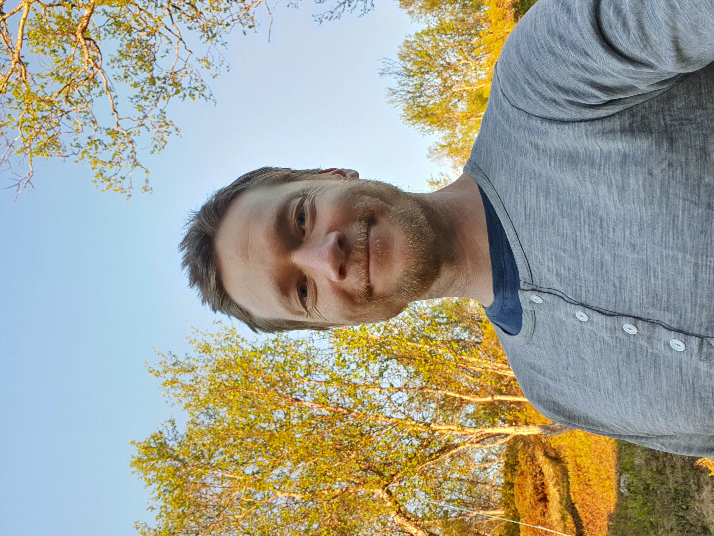
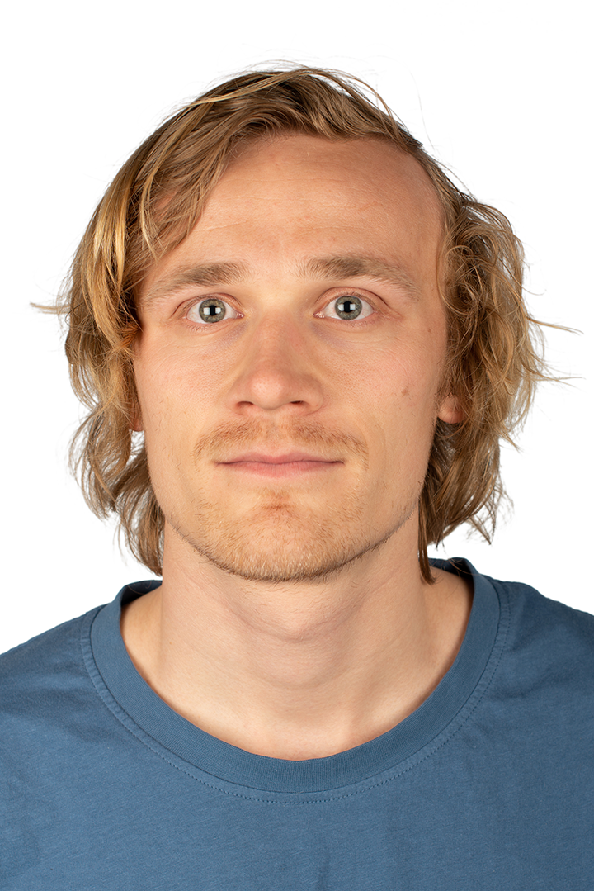

Who we are
Coordinators and researchers

Erlend B. Nilsen
Researcher & lab coordinator
I’m a Professor in ecology and wildlife management at Nord University and Senior Research Scientist at the Norwegian Institute for Nature Research (NINA). I have a wide set of research interests that includes population ecology of vertebrates (in particular in mountain ecosystems), trophic interactions and food web ecology, wildlife management. I also has a strong interest in open science. I’m the project leader of Hønsefuglportalen and Living Norway Ecological Data Network.
Link to publications: Google scholar and Orcid

Jan Eivind Østnes
Researcher & lab coordinator
Jan Eivind is….

Rakel Blaalid
Researcher
Rakel is….
Elise W. Ingvaldsen
Field work coordinator
Elise is….

Markus F. Israelsen
Field work coordinator and data curator
I’m working as a Senior technician at the Norwegian Institute for Nature Research (NINA) in Trondheim on various projects connected to population ecology, wildlife monitoring and radioecology. I’m currently the project leader for the safety equipment group at NINA, being responsible for supplying necessary equipment to field personnel. I also have interests related to data management, GIS and programming using a number of languages such as R, QGIS, Python, HTML/CSS and SQL.
Link to publications: Google scholar
Oddmund Kleven
Researcher
Oddmund is….
Rolf Terje Kroglund
Researcher
Rolf Terje is….
Jenny Mattisson
Researcher
Jenny is….
Pål F. Moa
Researcher
Pål is….
Chloé R. Nater
Researcher
Chloé is….
PhD candidates
Annabel J. Slettenhaar
PhD candidate
Annabel is….
Lasse F. Eriksen
PhD candidate
Lasse is….
MSc students
Hilvi Emerense Hamar
MSc student
Hilvi is….
Børje Cato Moen
MSc student
Børje is….
Stian Sundsvik
MSc student
Stian is….
Eirik Wiik
MSc student
Eirik is….